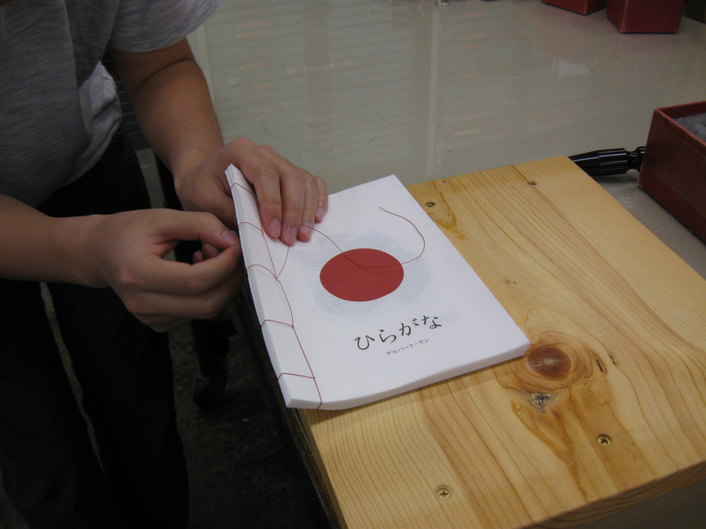

Overview
Interested in Japanese culture since I was young, I wanted to bind a book that captures the essence of a traditionally handbound Japanese book. I looked at different cities of Japan and clipped them in the form of Japanese alphabet characters (hiragana), as if viewing the cities through the letterforms.
